Overhanging Great Wall
Last night, I checked into the hotel and thought I was going to stay for one night only.
This morning, I saw the weather was so nice, so I started to plan a trip to the Great Wall of China.
The hotel owner asked, "You are going to stay here one more night, right?"
"Huh? I am, but how do YOU know?" I asked myself.
He reminded me that it would be a windy day, up to Force 7, so I might have trouble riding a bike today.
I just realized that too sunny, too rainy, now even too windy, are all the factors I should consider when riding a bike.

I went outside, WOW! It was REALLY windy.
The boy in "The education of a little tree" said that when he was young, he was so light that he could fly with the wind.
Judging from this windy situation, I believed with a piece of bed sheet, I can also fly with the wind.
Anyway, the first thing I needed to do today was not to "eat", but to check my website situation.
Without proper notice or explanation, Bluehost closed my website, and canceled my domain name.
They just asked me to contact the customer service department via e-mail.
I couldn't even log into my account. So I registered a new account and demanded an explanation at this internet café.
What I got was auto-reply from Bluehost saying that someone will look into my account during normal business hour.
I was so angry and frustrated about their attitude. I pre-paid three years' service fee, for almost 6000 NTD, and this was what I got?
Finally, I received their reply the next morning, which made me even more frustrated.
First of all, they should write me an e-mail or notify me about any abnormal activities of my account.
They shouldn't just shut my web site off, stopped my account and expected me to find an alternative way to contact them.
Basically, they closed my web site because somebody reported illegal activities on my website.
This answer only confused me even more, and I had no idea what they were talking about.
Good news was, they replied my e-mail within 30 min, saying that those Mac Chinese softwares were illegal,
and that was the reason they decided to shut off my web site immediately—meaning without notification.
Well, I had no idea why they were OK before, but now was not, about my Chinese Mac downloads.
I had no energy to fight with them at this moment, so I just took all the downloads off the site at this moment.
Let me say sorry to those Mac users that might need these softwares. I would make them available once I find a new home for them.
Enough of the hassles, it was about time for lunch.
I ordered a beef casserole, and a piece of flatbread.
The casserole dish had shredded seaweed, some mushrooms, vegetables, cellophane noodles,
and sliced stewed beef, accompanied with a delectable soup.
Even I saw some sand-like stuff at the bottom of that pot, I still couldn't control myself but finished the very last drop of that soup.
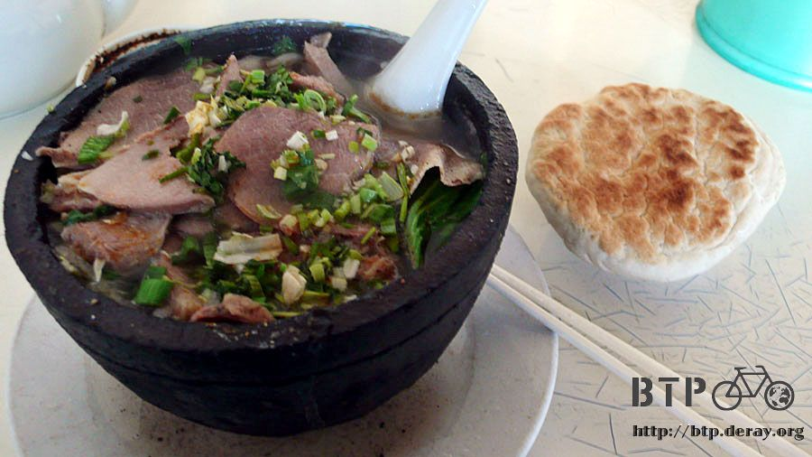
The plan for this afternoon?
"I am going to the Great Wall of China!" Oh! Yeah!
Carrying two packs of crackers, one pack of peanuts, Dido and I started our field trip together.
It cost 5 RMB to buy a map, very expensive to me, so I decided to take advantage of my own mouth—ask for directions.
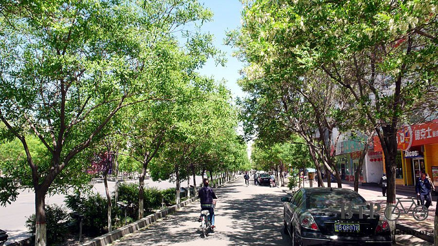
As usual, I got lost a little bit, but eventually I arrived at the Jiayuguan (Jiayu Pass)—
also called the " First and Greatest Pass Under Heaven".
As everybody knows, Jiayuguan is the west end of the Great Wall,
so it was always heavily guarded by the military since the ancient China,
to prevent the attack by Xiongnu (some nomadic people from central Asia in ancient China).
Many years later, you can still see military units here.
I saw many tanks running in the desert when I was riding my bike on the way here.
These soldiers were running under the sun. I wonder where they were heading.
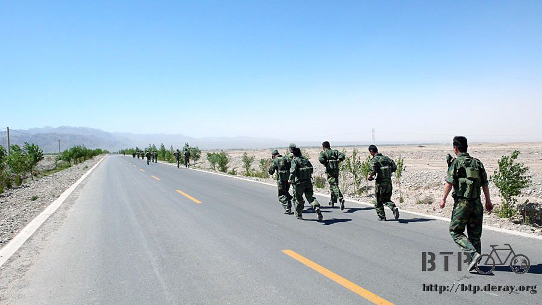
Because the entrance fee for Jiangyu Guan was 61 RMB, and it was rated 4-star, I had no interest whatsoever to get in.

Remembered that I paid 30 RMB to enter a 4-star tourist site nearby the Yellow River?
That was totally waste of my money.
More importantly, bike was not allowed here.
But I can't park Dido at the parking lot, which was 5 cents, since I didn't bring the lock with me, either.
Therefore….
Yes, I have been at the "First and Greatest Pass Under Heaven"……'s gate.

I leaned on the fence, and looked inside, "Ohhh.. THAT is the Great Wall".
I was still debating if I should pay the money and get in,
I was wondering if I will regret later that I was so close to the Great Wall but didn't get close enough to walk on it.

I needed time to rethink this over, so I walked and walked, and I walked into the Black Mountain (Hei Shan) Rock painting area.

Looking at these strange rocks, some were human sculptures marked with years they were made. Some had drawings on them.

There was a Great Wall-styled shopping mall around this park.
Me? Of course just window shopping.
All I could think at this moment was, should I or should I not pay that stupid money and get on the Great Wall.

Just when I started to have serious headache coming, I saw a map, saying "Overhanging Great Wall".
Wow! Even the name sounds so cool. With an ice popsicle in my mouth, I rushed over on my Dido.

"Overhanging Great Wall" is also A Great Wall, but the entrance fee was only 21 RMB, which was 40 RMB cheaper than the previous one.
The whole package was just too attractive to me.
The cashier even offered to keep an eye on my Dido while I toured the Great Wall. I was really touched.
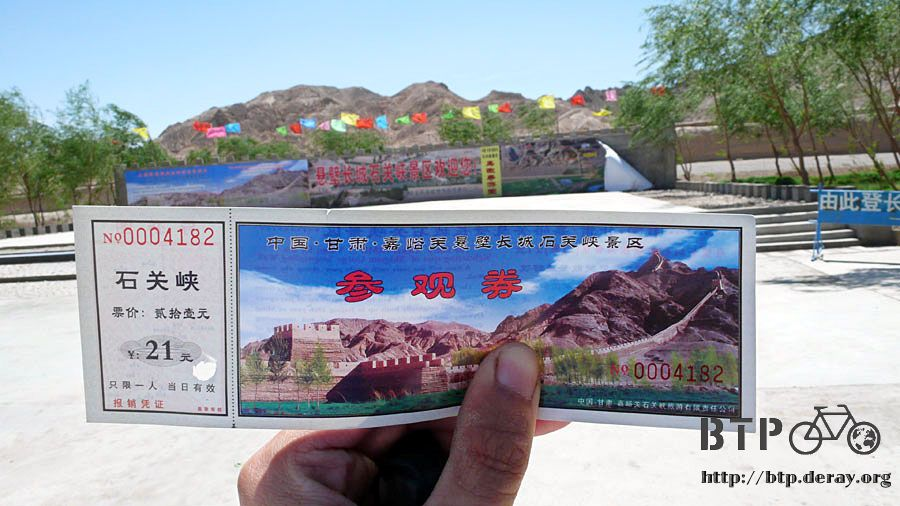
Today is Wed, no tour bus brought in tons of people here.
This part of Great Wall was smaller, and didn't have the shopping center, so actually not many locals visiting, either.
I started to walk on the wall around 1:30, and looped back at 3:00, and I WAS THE ONLY PERSON ON THE WALL.
This was the best tour I have ever had. It felt like being those rich people, who spent lots of money to reserve this part of Great Wall just for them.
Now with only 21 RMB, I also had this part of Great Wall all by myself.
I was totally thrilled.

This was the view from the bottom, and you will pass two beacons when climbing up.
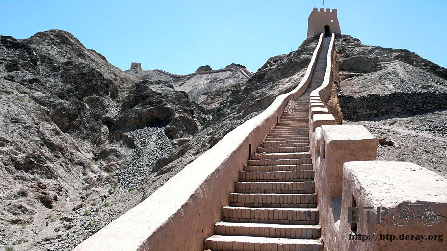
I started slow (need to catch my breathe), and still not on the top yet ~_~
I was told that there were two foreigners spent almost six months to walk on the entire Great Wall, 5000 km long.
They are really some tough people.
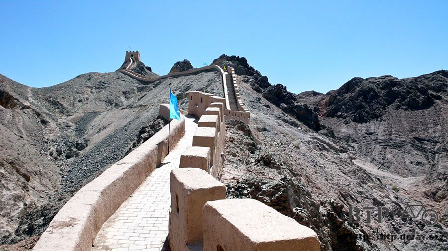
The recovery of the Great Wall was a delicate and difficult job. But it was so nicely done,
that you get to step on the same material that was used thousand years ago to build this Great Wall.
Even the poles for the flags were made of thin bamboo stick. Their effort to recover this piece of history deeply touched my heart.

Walk slowly, I saw another "piece" of the Great Wall. For some reason, the Great Wall is not a continuous long wall anymore,
it was a piece here, and another piece there. Same for the entrance ticket,
you have to buy one for each piece of the Great Wall that you want to visit.

It was pretty windy on the ground, and it was worse when I got on this Great Wall.
The higher I climbed, the stronger the wind was.
I might be able to fly like a kite if some one just gave me a bed sheet now.
Finally, I reached the highest beacon at the Overhanging Great Wall, and this was the end point for this part of the Great Wall.
After this, was the Great Wall made by the Mother Nature.

Hou WenYong, a popular author in Taiwan, once said "We see challenge, we march there".
With the same attitude, I risked my life to climb down the beacon to the other side, the "Mother Nature Great Wall".
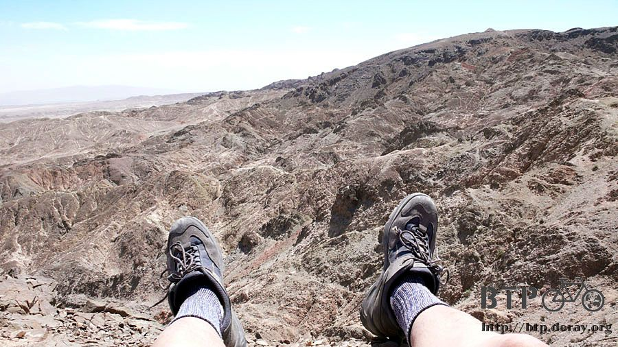
Looked at the path I just walked, WOW! And don't forget that I still needed to make it back to the beacon.

Since I took the dangerous path to come here, might as well take a photo to mark this historical moment.

Looked down from the beacon, the greens below my feet really were like the oasis in a colossal desert area.
The trees lined up at each side of the road around here now looked like green lines that extended to the city.
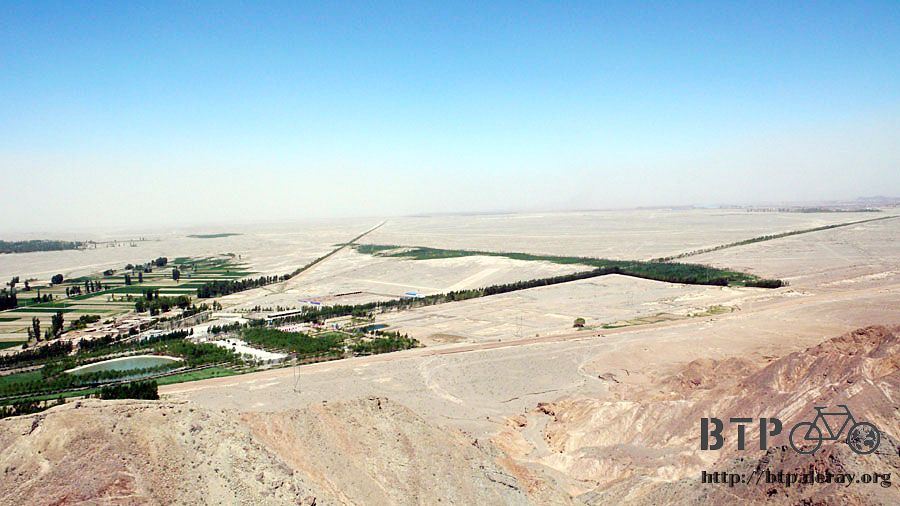
The same analogy, these modern cities like Weiwu, Changyi, Jiuquan, and Jiayuguan,
were also like oasis cities that surround the desert.
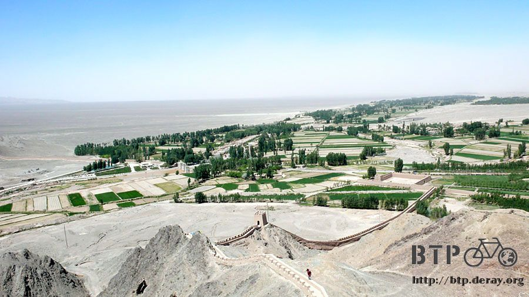
The views of looking up to the Great Wall from the bottom,
and looking down to the oasis from the Great Wall, were so dramatically different.
Embracing the cold breeze on this sunny day,
I was wondering what those soldiers saw when they were defending their country in the ancient China.
Was the night cold? It can't be an easy job to take the night shift in the army,
no matter which dynasty they lived in, right?
I sat here to enjoy the scenery for a long time.
The purpose of building the Great Wall was to protect China from the attack by Xiongnu, therefore,
it made a better sense to build the wall along the existing mountains.
That is why many parts of the Great Wall were sort of blended into the mountains around them.

I was a bit hungry on the way back to the city,
so I was really excited to see the interesting deep-fried chicken stand that I tried yesterday.
I got some veggie-roll, hot dogs, fish balls, stinky tofu, regular tofu--all on the sticks,
and the golden needle mushroom that was in my mouth at this moment.

Their sauce and seasoning powers were really tasty, I could smell it long before I can see that stand.
It only cost me 4 RMB for all these. I was so happy to eat them on my bike thatI didn't notice I dropped something on the stand .
(Hint: there was a black little stuff on the upper right hand corner).

By time I was back to the hotel, changed the clothes and ready to sort my photos, I finally noticed that I can't find my GPS tracker.
It was not on my left hand, where I usually held it that way, it was not in my pocket. So where was it?
The last time I saw that GPS tracker was by that food stand.
I had to take the photo and eat the food at the same time, so I left my GPS tracker on that stand.
Then I just left, with my food, but not that tracker.
Oh! My god! It has been more than half an hour already.
Still wearing my PJs and slippers, I rode Dido back to that stand as fast as I can.
I hope nobody would take it, otherwise I won't be able to track my path.
Usually I turn it on in the morning, turn it off when I arrive to a hotel at night.
I never pay much attention to it, but it was always doing its job without any complain.
"I am so sorry for leaving you out there. Please stay at the same place. I am coming for you ASAP".
It was around 50 m away from that stand, the unique smell told me that I was almost there.
I almost cried when I didn't see my GPS tracker on the stand.
The lady took it out from her cart and told me that she it was too late to grab me back when she saw that on her stand.
So she moved it inside her cart to keep it safe.
"Thank you so much, nice lady! I really appreciate it"
I thanked her so many times that made her feel a bit embarrassed, so I thought I should go then.
My hat was blown away, so I had to find another hat that can shade the sun when necessary.
The hotel I stayed was probably on the most crowded street in Jiayuguan city.
The traditional market and breakfast stands started their business in the morning, other food stands came in around noon.
Grocery shopping stalls joined in the afternoon.
Then the restaurants and night markets replaced all other activities to occupy the entire street.
I saw a jean-material baseball cap, maybe this would work just fine for me.
It was 5 RMB, but I bargained it down to 4, excellent price.
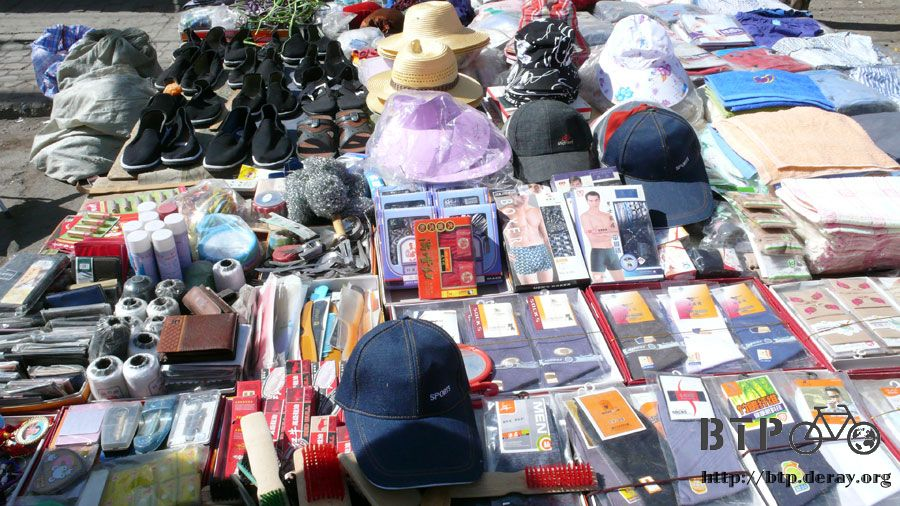
It was still pretty bright at 8:00 at night, but it can't fool my tummy.
So I went to hunt for dinner at "the most crowded street of Jiayuguan"
Because most of them sold the same type of food: beef in the clay pot, lamb in the clay pot,
or chicken in the clay pot, with the same price, 6 RMB. The only difference would be the taste.

I sat down in a relatively clean restaurant (actually I judged by how the boss looks like),
and ordered a chicken in the clay pot. The sizzling hot pot was heated on the coal until it's ready.
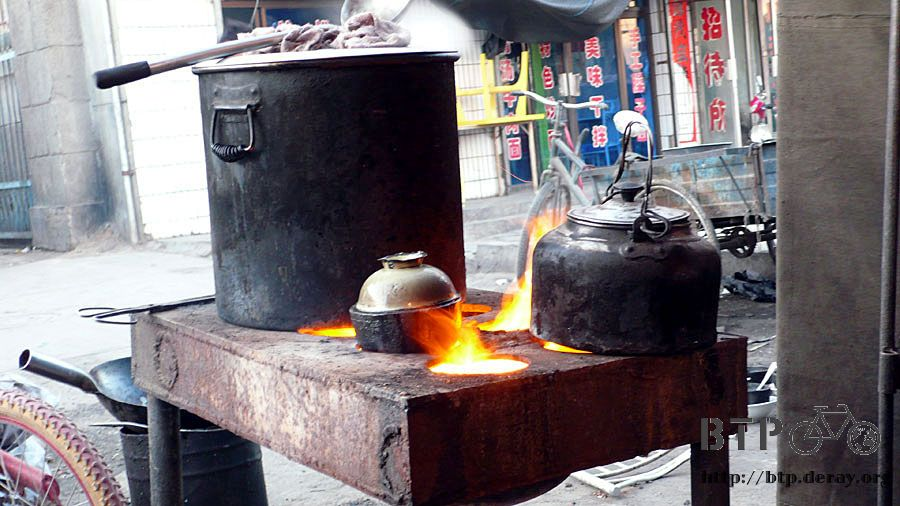
After serving on the table, the clay pot continued the soup boiling for a while.
Adding some meshed garlic paste and hot pepper, accompanied by free flatbread,
this one tasted way better than the one I had for lunch today.

I will be out of Jiayuguan tomorrow, that means less grocery stores and less food stands.
I had to stock my snacks, so I went shopping at the same store I went yesterday.
I knew I will miss all the convenient stores, restaurants, hotels and ice-pop stands.
I would have to adjust my life without them.
I liked peanuts, so I bought 5 packs of different flavors of sweet peanuts, it should last for a while.
I also got some maltose-sweetened milk, a roll of tissue,
and a Sachima (Note: a Manchu sweet snack, main ingredient is flour, butter and rock sugar).
When I was at the cashier, the owner said to me very seriously,
"I have to remind you that there are a lot of thieves at this area. You'd better take very good care of your personal belongs."
So, the most crowded street also has the most crowded thieves?
They'd take anything, from wallets to scooters, and they ran away, beyond, out of the Great Wall. What can you do then?
"How about the police? Can they do something about it?"
She gave me a smile, and said those polices were all bribed,
so don't expect much. We can only take good care of ourselves.

Since then, I only had enough money and a notebook (not the laptop) with me if I came out for dinners and stuff.
That's why I didn't have many photos taken at the dinner place or at night.
I remembered earlier when I carelessly took out my digital camera while waiting for the dinner.
That might qualify me as an easy target for "them", how dangerous!
I was pretty lucky, I guess, except the adventure to get my GPS tracker back.
Thinking about tomorrow, I am going outside of the Great Wal
l (in ancient China, it meant you go out of the civilized Chinese area that was governed by the emperor).
I was very excited and very nervous.
Indulge me! Show me what the real desert is!